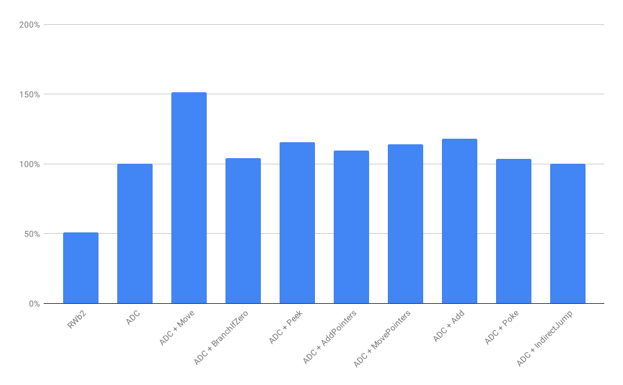
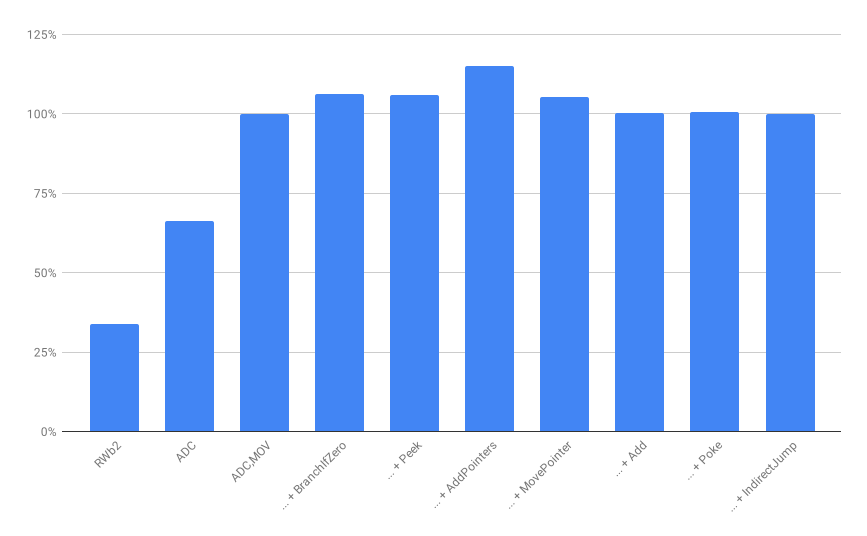

Crawling out of the turing tarpit
Today we’re going to
- Design an instruction set
- Build a virtual machine

Rolf W. Rasmussen
Chief Software Architect, Vizrt
Hints for following along
- Grab the archive of executable images from http://rolfwr.net/rwisa/rwisa-exe.zip
- Choose your preferred programming language.
- Prepare a simple “Hello World” console application to start building upon.
- If you get stuck, refer to example implementations at https://github.com/rolfwr/rwisa-vm
- Slides at http://rolfwr.net/tarpit
Instruction Set Architectures (ISA)
Minimal Instruction Set Computer (MISC)
- OISC — One
- MISC — Minimal
- RISC — Reduced
- CISC — Complex
Milestone #1
Create a minimal runnable program
true — do nothing, successfully
Executable Images
Header vs headerless formats
For now, let’s choose headerless for simplicity.
Executable formats with headers
| Format | Main use |
|---|---|
| DOS MZ | DOS |
| COFF | Old Unix and old Windows |
| ELF | Unix and Linux |
| PE | Windows |
| Mach-O | NeXTSTEP, macOS, iOS |
Executable formats without headers
.COM executable hex dump
0E 1F BA 0E 01 B4 09 CD 21 B8 01 4C CD 21 48 65 ........!..L.!He
6C 6C 6F 20 57 6F 72 6C 64 21 0D 0D 0A 24 llo.World!...$
Assembly
➡0E push cs
➡1F pop ds
➡BA 0E 01 mov dx, 0x10e
➡B4 09 mov ah, 9
CD 21 int 0x21
B8 01 4C mov ax, 0x4c01
CD 21 int 0x21
48 65 6C 6C 6F 20 57 6F 72 6C 64 21 0D 0D 0A 24
db 'Hello World!', 0dh, 0dh, 0ah, '$'
Charles Babbage
Difference Engine: Mechanical number crunching.
Analytical Engine: Unrealized mechanical computer with branches, loops and memory.
Ada Lovelace
Visionary that recognized that general-purpose computers could be used for more than number crunching.
Alan Turing
The nature of computation
Turing Machine: Theoretical model sufficient for general purpose computing.
Turing equivalence: Sufficiently complex systems can simulate each other.
John von Neumann
Stored-program computers: Change how a computer behaves without rewiring it by storing programs and data in integrated memory.
Alan Perlis
Epigrams in programming
54. Beware of the Turing tar-pit in which everything is possible but nothing of interest is easy.
Machine State
Von Neumann architecture state
| State | Type | Purpose |
|---|---|---|
| Memory | Byte array | Store program and data |
| Program Counter (PC) | Integer/Pointer | Find next instruction |
Pointer size address space
| Pointer bytes |
Address space |
|
|---|---|---|
| 8-bit | 1 | 256 bytes |
| 16-bit | 2 | 64 KiB |
| 32-bit | 4 | 4 GiB |
| 64-bit | 8 | 16 EiB |
Halt
Stop instruction execution.
| Opcode | Mnemonic | Description |
|---|---|---|
| 00 | HLT | Halt |
Implementation of "true"
1-true.rwa2 hex dump
00 .
Assembly
➡PC = 000 hlt
➡PC = 1, halted
Python
#! /bin/env python3
import sys
programfile = sys.argv[1]
with open(programfile, mode='rb') as file:
mem = bytearray(file.read())
pc = 0
while True:
inst = mem[pc]
pc = pc + 1
if inst == 0: # Halt (HLT)
sys.exit(0)
raise NotImplementedError("Unknown instruction " + str(inst))
C hints:
stdio.h, stdlib.h, fopen(n, "rb"), fseek(f,0,SEEK_END), ftell(f), rewind(f), malloc(c), fread(b, 1, c, f), fclose(f), exit(0)
Node.js hints:
fs.readFileSync(n), process.argv[2], process.exit(0)
C# hints:
System.IO.File.ReadAllBytes(n), System.Environment.Exit(0)
Let’s
code
Running example binary
$ vm rwa2/0-true.rwa2
$ _
Replace vm with the command to run your virtual machine implementation.
1948
Stop (STP)
Manchester Baby
First stored progam computer
1951
90m STOP UNIVAC
UNIVAC I
First commercial computer
1972
Halt (HLT)
Intel 8008, 8080, 8086, x86, x86_64
First commercial non-calculator personal computers
1975
Break (BRK)
MOS 6502, 6510
Popular in early micro computers
Milestone #2
Hello World!
Providing output from program
Data Access
Where can data be found?
- Embedded in instructions
- Stored internally in the Central Processing Unit (CPU)
- Stored in Random Access Memory (RAM)
- Sent or received through input/output ports (I/O)
Addressing modes
| Immediate | Use data value embedded in instruction. |
|---|---|
| Register | Access data from internal CPU storage. |
| Address | Access data in memory location specified by address. |
| Indirect | First read address value, then access data in memory location specified by address. |
| Offset | Add to value to address when accessing memory location specified by address. |
| Implicit | Access data locations such as stack and I/O ports as implied by the instruction operation. |
Output Byte (OUT)
Write byte to standard output.
| Opcode | Mnemonic | Description |
|---|---|---|
| 01 srcptr | OUT | Output Byte |
Read byte from address specified by srcptr, then write that byte to output.
Print the letter H
00000000: 01 06 00 00 00 out [0x00000006]
00000005: 00 hlt
00000006: 48 db 'H'
Like most modern architectures, we choose little-endian representation. I.e. the byte sequence 0x06, 0x00, 0x00, 0x00 is interpreted as the address 0x00000006.
import sys
class Machine:
def __init__(self, memory, pc):
self.mem = memory
self.pc = pc
def fetch_pointer(self):
ptr = 0
for i in range(4):
ptr = ptr + (self.mem[self.pc] << (i * 8))
self.pc = self.pc + 1
return ptr
def halt(self):
sys.exit(0)
def outputbyte(self):
c = vm.mem[self.fetch_pointer()]
sys.stdout.buffer.write(bytes([c]))
sys.stdout.buffer.flush()
def run(self):
ops = { 0: self.halt, 1: self.outputbyte }
while True:
inst = self.mem[self.pc]
self.pc = self.pc + 1
ops[inst]()
programfile = sys.argv[1]
with open(programfile, mode='rb') as file:
memory = bytearray(file.read())
vm = Machine(memory, 0)
vm.run()
C hints: putchar(), fflush(stdout)
Node.js hints: Buffer(1), process.stdout.write(buf), this.output_byte.bind(this)
C# hints: System.Console.OpenStandardOutput(), s.WriteByte(b)
Let’s
code
Running example binaries
$ vm rwa2/1-hello.rwa2
Hello World!
$
$ vm rwa2/1-test.rwa2
TAP version 13
1..1
ok 1 - Implements OUT.
$ _
Replace vm with the command to run your virtual machine implementation.
Test Anything Protocol
npm install -g tap
vm 1-test.rwa2 | tap -
Milestone #3
Real unit testing
Testing and conditional execution.
Branch If Plus (BPL)
Jump if a signed byte is zero or positive
| Opcode | Mnemonic | Description |
|---|---|---|
| 02 jmpptr srcptr | BPL | Branch If Plus |
Read byte from address srcptr, if its high bit is zero set PC to jmpptr address.
Jump Unconditionally
JMP target — Synthesized
...
jmp target
...code to skip...
target: ...code to run...
hlt
...
jmp target
bpl target, zero
...code to skip...
target: ...code to run...
hlt
zero: db 0
Branch If Negative
BNE target, src — Synthesized
...
bne target, value
...
target: ...
hlt
value: db -7
...
bne target, value
bpl continue, value
jmp target
continue:
...
target: ...
hlt
value: db -7
Do nothing
NOP — Synthesized
...
nop
...more code to run...
hlt
...
nop
bpl 0, negative
...more code to run...
hlt
negative: db -1
class Machine
# ...
def branchifplus(self):
jmpptr = self.fetch_pointer()
srcptr = self.fetch_pointer()
if self.mem[srcptr] < 128:
self.pc = jmpptr
def run(self):
ops = {
0: self.halt,
1: self.outputbyte,
2: self.branchifplus
}
C-like hints:
if (x < 128)
Let’s
code
Running example binary
$ vm rwa2/2-test.rwa2
TAP version 13
1..10
ok 1 - Implements OUT.
ok 2 - BPL 0 jumps
ok 3 - BPL 1 jumps
ok 4 - BPL 126 jumps
ok 5 - BPL 127 jumps
ok 6 - BPL 128 does not jump
ok 7 - BPL 129 does not jump
ok 8 - BPL 254 does not jump
ok 9 - BPL 255 does not jump
ok 10 - Synthesized Jump unconditionally
$ _
Replace vm with the command to run your virtual machine implementation.
Milestone #4
Fizz Buzz
Arithmetic and conditional loops.
Subtract (SUB)
Subtract a byte from another byte.
| Opcode | Mnemonic | Description |
|---|---|---|
| 03 dstptr srcptr | SUB | Subtract |
Read byte value from dstptr, subtract byte value from srcptr, then write the result back to dstptr.
Set Zero
MOV dst, 0 — Synthesized
...
mov variable, 0
...
hlt
variable: db 42 ; will become 0
...
mov variable, 0
sub variable, variable
...
hlt
variable: db 42 ; will become 0
Negate
NEG dst, src — Synthesized
...
neg dst, src
...
hlt
src: db 42
dst: db 0 ; will become -42
...
neg dst, src
mov dst, 0
sub dst, src
...
hlt
src: db 42
dst: db 0 ; will become -42
Add
ADD dst, src — Synthesized
...
add dst, src
...
hlt
src: db 42
dst: db 7 ; will become 49
...
add dst, src
neg tmp, src
sub dst, src
...
hlt
src: db 42
dst: db 7 ; will become 49
tmp: db 0 ; will become -42
Move
MOV dst, src — Synthesized
...
mov dst, src
...
hlt
src: db 42
dst: db 0 ; will become 42
...
mov dst, src
mov dst, 0
add dst, src
...
hlt
src: db 42
dst: db 0 ; will become 42
class Machine
# ...
def subtract(self):
dstptr = self.fetch_pointer()
srcptr = self.fetch_pointer()
result = (self.mem[dstptr] - self.mem[srcptr]) & 0xFF
self.mem[dstptr] = result
def run(self):
ops = {
0: self.halt,
1: self.outputbyte,
2: self.branchifplus,
3: self.subtract
}
# ...
C-like hints:
-=
Let’s
code
Running example binaries
$ vm rwa2/3-fizz.rwa2 | head
1
2
Fizz
4
Buzz
Fizz
7
8
Fizz
Buzz
$ vm rwa2/3-test.rwa2_
Replace vm with the command to run your virtual machine implementation.
Milestone #5
Run a OS image and development environment
Interactive use and output that is not predetermined.
Shift Left
SHL dst — Synthesized
E.g. %00010101 (21) ➔ %00101010 (42)
...
shl dst
...
hlt
dst: db 21 ; will become 42
...
shl dst
add dst, dst
...
hlt
dst: db 21 ; will become 42
Rotate Left
ROL dst — Synthesized
E.g. %10000010 (130) ➔ %00000101 (5)
...
rol dst
...
hlt
dst: db 130 ; will become 5
...
rol dst
bpl high0, dst
shl dst
add dst, one
jmp continue
high0: shl dst
continue: ...
hlt
dst: db 130 ; will become 5
one: db 1
Rotate Right
ROR dst — Synthesized
E.g. %10000010 (130) ➔ %01000001 (65)
...
ror dst
...
hlt
dst: db 130 ; will become 65
...
ror dst
rol dst
rol dst
rol dst
rol dst
rol dst
rol dst
rol dst
...
hlt
dst: db 130 ; will become 65
Bitwise operations
AND, OR, XOR, etc
- Test high bits and handle all logic cases using BPL.
- Conditionally add one to result.
- Shift input and result left.
- Repeat until all 8 bits have been processed.
Add with carry
Wide add, pointer math, etc
- Move first argument to result.
- Add second argument to result.
- Add carry-in to result.
- Test argument high-bits and result high-bit.
- Conditionally set carry-out to zero or one.
Self-modifying code
Peek, Poke, Computed Jump, etc.
- Calculate pointer address using pointer math.
- Apply calculated pointer to memory containing arguments of next operation.
- Perform next operation, for example a move or a jump.
Switch statements
Create a branching binary search tree using SUB and BPL
Memory copy
- Pointer math
- Peek and Poke
Stacks
- Pointer math
- Memory Copy
Function Calls
- Stacks
- Memory Copy
- Computed Jumps
Creating an OS is a lot of work
Can we re-use an existing OS and development environment?
Porting an OS is also a lot of work
- Create or port a C compiler
- Port architecture specific code
Turing equivalence to the rescue
Emulating an existing architecture on top of our own.
Running an existing OS inside this emulator.
YO DAWG
I HERD YOU LIKE EMULATORS SO WE PUT AN EMULATOR IN YO EMULATOR SO YOU CAN EMULATE WHILE U EMULATE
Emulating MOS 6502
Has hardware features our architecture does not have.
No problem, we’ll just emulate those.
- Registers ➔ Memory
- Flags ➔ Memory
- Call stack ➔ Synthesized stack
- Many addressing modes ➔ Pointer Math
The need to interact
Without a way to interact with the world, the output from all our programs, including our MOS 6502 emulator will be predetermined.
Our ISA can already write data to output. Now we need it read data from input.
Input Byte (IN)
Read byte from standard input.
| Opcode | Mnemonic | Description |
|---|---|---|
| 04 dstptr | IN | Input Byte |
Read byte from input, then write that byte value to dstptr.
class Machine
# ...
def inputbyte(self):
dstptr = self.fetch_pointer()
self.mem[dstptr] = sys.stdin.buffer.read(1)[0]
def run(self):
ops = {
0: self.halt,
1: self.outputbyte,
2: self.branchifplus,
3: self.subtract,
4: self.inputbyte
}
# ...
C hints:
getchar()
Node.js hints:
Posix: fs.openSync('/dev/stdin', 'rs'), Windows: process.stdin.fd, fs.readSync(fd, buf, 0, 1, null)
C# hints:
System.Console.OpenStandardInput(), s.ReadByte()
Let’s
code
Running example binary
$ vm 4-mos6502.rwa2
Reset vector: 0xFFFC
[CLR]
**** commodore 64 basic v2 ****
64k ram system 38911 basic bytes free
ready.
print sqr(42)
6.4807407
ready.
10 print "hello"
run
hello
ready.
_
6502 Instruction Phases
- Addressing: Instruction decoding and calculating effective address
- Read: Where to read value and argument from
- ALU Operation: What calculation to perform
- Write: Where to store the result
Emulation loop
One switch expression for each phase
The RWa2 ISA
| Opcode | Mnemonic | Description |
|---|---|---|
| 00 | HLT | Halt |
| 01 srcptr | OUT | Output Byte |
| 02 jmpptr srcptr | BPL | Branch If Plus |
| 03 dstptr srcptr | SUB | Subtract |
| 04 dstptr | IN | Input Byte |
Turing Equivalence Subset
| Opcode | Mnemonic | Description |
|---|---|---|
| 02 jmpptr srcptr | BPL | Branch If Plus |
| 03 dstptr srcptr | SUB | Subtract |
No input, no output. Halting is implicit.
One Instruction Set Computer (OSIC)
Esoteric. Not at all practical.
Example: SUBLEQ
| Instruction | Implementation |
|---|---|
| subleq a, b, c | mem[b] -= mem[a] if (mem[b] <= 0) pc = c |
Negative PC implies halt.
Optional
Milestone #6
Executable image header and size optimization
Trailing zero bytes
$ od -tx1z -Ax rwa2/4-mos6502.rwa2 | tail
033ae0 10 e6 5b 5d 0d f6 e4 dc 1b b7 3a 3b 03 00 95 fa >..[]......:;....<
033af0 02 00 00 60 ff ff 95 1a 03 00 00 20 ff ff 04 00 >...`....... ....<
033b00 ff ff ba 05 08 02 04 03 24 ec f7 0e 09 da 0b 0c >........$.......<
033b10 f4 e9 df 18 33 e8 13 c1 b6 e7 f2 27 ea 46 de 70 >....3......'.F.p<
033b20 68 62 6a 69 64 6d 79 71 3f 23 2c 28 29 e1 eb c0 >hbjidmyq?#,()...<
033b30 80 00 01 00 00 f0 ed 6b 77 75 00 00 00 00 00 00 >.......kwu......<
033b40 00 00 00 00 00 00 00 00 00 00 00 00 00 00 00 00 >................<
*
043b70 00 00 >..<
043b72
$ _
Used as working memory at runtime.
RW header and memory layout
| Offset | Size | What |
|---|---|---|
| 0 | 2 | Magic ‘RW’ |
| 2 | 1 | ISA revision (rev): rev + 97 |
| 3 | 1 | Pointer size (ps): Log2(ps) + 48 |
| 4 | ps | End of file (eof) pointer, .BSS segment start |
| 4+ps | ps | End of memory (eom) pointer, .BSS segment end |
| 4+2×ps | eof−(4+2×ps) | .TEXT segment, executable code and data |
| eof | eom−eof | Zero initialized runtime memory (.BSS segment) |
Header Magic Signature
DOS MZ executables are identified by ASCII characters ‘M’ and ‘Z’ at the start of the file
Mark Zbikowski was one of leading developers of MS-DOS
.BSS section
Named after Block Started by Symbol from the United Aircraft Symbolic Assembly Program and documented by MIT in 1957.
Describes a segment of memory initialized to zeros. Executable image only stores the length of the segment, not the zero bytes themselves.
Impact on executable size
| Executable | RWa2 | RWb2 | Delta |
|---|---|---|---|
| 0-true | 1 | 13 | +12 |
| 1-hello | 76 | 88 | +12 |
| 1-test | 245 | 257 | +12 |
| 2-test | 1760 | 1772 | +12 |
| 3-fizz | 922 | 927 | +5 |
| 3-test | 14065 | 14062 | −3 |
| 4-mos6502 | 277365 | 211782 | −65583 |
def read_pointer(mem, offset):
ptr = 0
for i in range(4):
ptr = ptr + (mem[offset] << (i * 8))
offset = offset + 1
return ptr
class Machine:
# ...
def fetch_pointer(self):
ptr = read_pointer(self.mem, self.pc)
self.pc = self.pc + 4
return ptr
# ...
assert memory[0:2] == b"RW"
isa_revision = memory[2] - 97
pointer_size = 1 << (memory[3] - 48)
assert isa_revision == 1
assert pointer_size == 4
eof = read_pointer(memory, 4)
eom = read_pointer(memory, 4 + pointer_size)
fullmem = memory[0:eof] + bytearray(eom - eof)
pc = 4 + 2 * pointer_size
vm = Machine(fullmem, pc)
vm.run()
C hints:
realloc(ptr, size), memset(ptr, 0, size)
Node.js hints:
require('assert'), buf.slice(offs, size), Buffer.concat([bufs], size)
Let’s
code
Run executables directly from Linux host
binfmt_misc
$ ./vm-rwb2 rwb2/1-hello.rwb2
Hello World!
$ rwb2/1-hello.rwb2
-bash: rwb2/1-hello.rwb2: cannot execute binary file: Exec format error
$ _
$ reg=":RWb2:M::RWb2::$(realpath vm-rwb2):"
$ sudo sh -c "echo $reg > /proc/sys/fs/binfmt_misc/register"
$ _
$ rwb2/1-hello.rwb2
Hello World!
$ _
Optional
Milestone #7
Optimizing ISA for performance
Instrumentation
672678384 Subtract
286188345 [SetZero]/Subtract
154388235 Negate/Subtract
148111208 Add/Subtract
72379445 [SubtractConstant]/Subtract
8213954 PeekSelfModifySubtract/Subtract
1724479 IfEqual/Subtract
809420 PokeSelfModify/Subtract
667618 CarrySubtract/Subtract
134598 .../Subtract
61046 JumpIfZeroOrLess/Subtract
36 JumpIfEqual/Subtract
528603759 ReadByteAndAdvance
45759844 ReadByteAndAdvance/Read6502Memory/LoadAddressWithOffset/AddPointersSynth/AddWide4,4/CarryAdd/BranchIfPlus
35540339 ReadByteAndAdvance/Read6502Memory/AddPointersSynth/AddWide4,2/CarryAdd/BranchIfPlus
26234056 ReadByteAndAdvance/Read6502Memory/AddPointersSynth/AddWide4,2/CarryAdd/Add/Negate/[SetZero]/Subtract
26234056 ReadByteAndAdvance/Read6502Memory/AddPointersSynth/AddWide4,2/CarryAdd/Add/Negate/Subtract
26234056 ReadByteAndAdvance/Read6502Memory/AddPointersSynth/AddWide4,2/CarryAdd/Add/Subtract
24408880 ReadByteAndAdvance/Read6502Memory/LoadAddressWithOffset/AddPointersSynth/AddWide4,4/CarryAdd/Add/Negate/[SetZero]/Subtract
24408880 ReadByteAndAdvance/Read6502Memory/LoadAddressWithOffset/AddPointersSynth/AddWide4,4/CarryAdd/Add/Negate/Subtract
24408880 ReadByteAndAdvance/Read6502Memory/LoadAddressWithOffset/AddPointersSynth/AddWide4,4/CarryAdd/Add/Subtract
18101247 ReadByteAndAdvance/IncrementPointer/IncrementWide2/AddWideByteConstant2/AddWide2,1/CarryAdd/BranchIfPlus
13117028 ReadByteAndAdvance/Read6502Memory/PeekSelfModifySubtract/InitializeDynamicPointer/Move/[SetZero]/Subtract
13117028 ReadByteAndAdvance/Read6502Memory/PeekSelfModifySubtract/InitializeDynamicPointer/Move/Add/Negate/[SetZero]/Subtract
13117028 ReadByteAndAdvance/Read6502Memory/PeekSelfModifySubtract/InitializeDynamicPointer/Move/Add/Negate/Subtract
13117028 ReadByteAndAdvance/Read6502Memory/PeekSelfModifySubtract/InitializeDynamicPointer/Move/Add/Subtract
13117028 ReadByteAndAdvance/IncrementPointer/IncrementWide2/AddWideByteConstant2/AddWide2,1/CarryAdd/Add/Negate/[SetZero]/Subtract
13117028 ReadByteAndAdvance/IncrementPointer/IncrementWide2/AddWideByteConstant2/AddWide2,1/CarryAdd/Add/Negate/Subtract
13117028 ReadByteAndAdvance/IncrementPointer/IncrementWide2/AddWideByteConstant2/AddWide2,1/CarryAdd/Add/Subtract
12432947 ReadByteAndAdvance/Read6502Memory/JumpTableSearch/BranchIfPlus
12204440 ReadByteAndAdvance/Read6502Memory/LoadAddressWithOffset/LoadAddress/Move/[SetZero]/Subtract
12204440 ReadByteAndAdvance/Read6502Memory/LoadAddressWithOffset/LoadAddress/Move/Add/Negate/[SetZero]/Subtract
12204440 ReadByteAndAdvance/Read6502Memory/LoadAddressWithOffset/LoadAddress/Move/Add/Negate/Subtract
12204440 ReadByteAndAdvance/Read6502Memory/LoadAddressWithOffset/LoadAddress/Move/Add/Subtract
9153330 ReadByteAndAdvance/Read6502Memory/JumpTableSearch/[SubtractConstant]/Subtract
9149927 ReadByteAndAdvance/Read6502Memory/LoadAddressWithOffset/AddPointersSynth/AddWide4,4/CarryAdd/MoveConstant/[SetZero]/Subtract
9149927 ReadByteAndAdvance/Read6502Memory/LoadAddressWithOffset/AddPointersSynth/AddWide4,4/CarryAdd/MoveConstant/[SubtractConstant]/Subtract
8157169 ReadByteAndAdvance/Read6502Memory/AddPointersSynth/AddWide4,2/CarryAdd/[SetZero]/Subtract
6558514 ReadByteAndAdvance/Read6502Memory/CopyBytes2,2/Move/[SetZero]/Subtract
6558514 ReadByteAndAdvance/Read6502Memory/CopyBytes2,2/Move/Add/Negate/[SetZero]/Subtract
6558514 ReadByteAndAdvance/Read6502Memory/CopyBytes2,2/Move/Add/Negate/Subtract
6558514 ReadByteAndAdvance/Read6502Memory/CopyBytes2,2/Move/Add/Subtract
6558514 ReadByteAndAdvance/Read6502Memory/PeekSelfModifySubtract/[SetZero]/Subtract
Instruction Candidates
| Mnemonic | Description |
|---|---|
| ADC | Add With Carry |
| MOV | Move Byte |
| BEQ | Branch If Zero |
| MOV dst, [src] | Peek |
| ADD.P | Add pointers |
| MOV.P | Move pointer |
| ADD | Add |
| MOV [dst], src | Poke |
| JMP [src] | Indirect Jump |
Test instruction candidates
Create compiler backend that optionally build programs with more efficient instructions
Benchmarking Candidates
Add With Carry (ADC) + ...
Move Byte (MOV) + ...
Observations
- We’ve picked the three instructions ADC, MOV and ADD.P.
- We’re seeing diminishing returns.
- We’re now up to eight instructions, which is a nice round number.
- ADC and ADD.P overlap in functionality.
- We can’t be sure we’ve picked the best three instructions.
Finding the best combination of instructions
Counting cycles for each combination
$ sort -n -t, stats.txt | head -10
245928323,mov,beq,add.p
247352189,mov,peek,add.p
248719719,mov,add.p,mov.p
261993835,mov,add.p,add
262161257,mov,add.p,poke
262471893,adc,mov,add.p
283983831,adc,mov,beq
285407697,adc,mov,peek
286775227,adc,mov,mov.p
300216765,adc,mov,poke
$ _
Move Byte (MOV)
Copy byte value from another byte
| Opcode | Mnemonic | Description |
|---|---|---|
| 05 dstptr srcptr | MOV | Move Byte |
Read byte value from srcptr, then write the value to dstptr.
Branch If Zero (BEQ)
Jump if a byte is zero
| Opcode | Mnemonic | Description |
|---|---|---|
| 06 jmpptr srcptr | BEQ | Branch If Zero |
Read byte from address srcptr, if it is zero set PC to jmpptr address.
Add Pointers (ADD.P)
Copy byte value from another byte
| Opcode | Mnemonic | Description |
|---|---|---|
| 07 dstptr srcptr | ADD.P | Add Pointers |
Read pointer value from dstptr, add pointer value from srcptr, then write the pointer value to dstptr.
The RWc ISA
| Opcode | Mnemonic | Description |
|---|---|---|
| 00 | HLT | Halt |
| 01 srcptr | OUT | Output Byte |
| 02 jmpptr srcptr | BPL | Branch If Plus |
| 03 dstptr srcptr | SUB | Subtract |
| 04 dstptr | IN | Input Byte |
| 05 dstptr srcptr | MOV | Move Byte |
| 06 jmpptr srcptr | BEQ | Branch If Zero |
| 07 dstptr srcptr | ADD.P | Add Pointers |
Impact on executable size
| Executable | RWa2 | RWb2 | RWc2 | Delta |
|---|---|---|---|---|
| 0-true | 1 | 13 | 13 | 0 |
| 1-hello | 76 | 88 | 88 | 0 |
| 1-test | 245 | 257 | 257 | 0 |
| 2-test | 1760 | 1772 | 1772 | 0 |
| 3-fizz | 922 | 927 | 657 | −270 |
| 3-test | 14065 | 14062 | 10272 | −3790 |
| 4-mos6502 | 277365 | 211782 | 80872 | −130910 |
Impact on performance
Now what?
We have an embryonic ISA and VM.
What else can we do?
Modern ISA Design
- Registers
- Stack instructions
- More addressing modes
- Function call and return
- Interrupts
- Memory Management Unit (MMU)
- Privileged Modes
- Single Instruction Multiple Data (SIMD)
- (Flags and speculation)
Device I/O
- Timer
- Display
- Keyboard
- Storage
User space VM
- Concurrency
- Syscalls
- Dynamic memory allocation
- Filesystem
- Networking
- Async I/O
- Web Assembly: https://webassembly.org/
- Reference: https://github.com/sunfishcode/wasm-reference-manual/blob/master/WebAssembly.md
System Emulation
- Virtualization of modern systems
- Vintage computing virtualization
- QEMU: https://git.qemu.org/git/qemu.git/
- Tiny Code Generator: https://wiki.qemu.org/Documentation/TCG
- JSLinux: https://bellard.org/jslinux/
- MAME: https://github.com/mamedev/mame/
- MAME CPUs: https://github.com/mamedev/mame/tree/master/src/devices/cpu
- VICE: https://sourceforge.net/p/vice-emu/code/HEAD/tree/trunk/vice/
- 8086tiny: https://ioccc.org/2013/cable3/hint.html
- IOCCC entry: https://ioccc.org/2013/cable3/cable3.c
- Deobfuscated: https://github.com/adriancable/8086tiny
Hardware implementation
- Hardware Description Languag (HDL)
- Field Programmable Gate Array (FPGA)
- Application-specific Integrated Circuit (ASIC)
- Pipelining
- Microcode
Special purpose ISAs
- GPU Intermediate Representation
- Soft CPUs
- One Instruction Set Computer (OSIC)
https://www.khronos.org/registry/spir-v/papers/WhitePaper.html
Full OS
- Kernel and device drivers
- Port Linux Kernel
- Build Linux user space tool chain
- Linux Kernel: https://www.kernel.org/
- Port GCC: https://kristerw.blogspot.com/2017/08/writing-gcc-backend_4.html
- Port Linux: https://lwn.net/Articles/654783/
- Build user space: https://buildroot.org/
Self-hosting
- Bootstrap environment
- Emulate itself — VM in VM already done
- Build itself — Need compiler
- Bootstrapping: https://bootstrapping.miraheze.org/
- C4 compiler: https://github.com/rswier/c4/blob/master/c4.c
- swieros: https://github.com/rswier/swieros